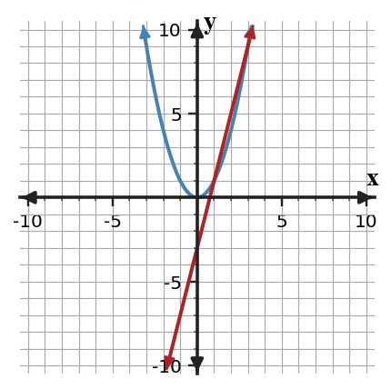
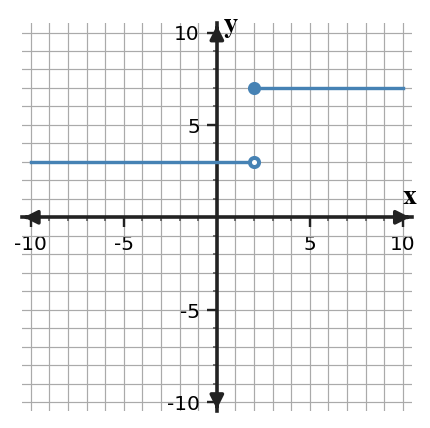
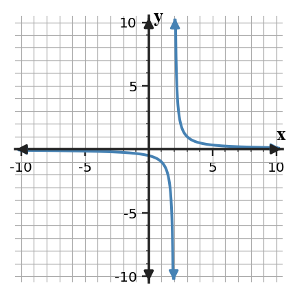

Limits and Continuity | Canonical Bank | Build date 2026-08-19
This file is the master content factory for downstream Unit 1 resources. Teacher solutions are intentionally separable from student tasks.
Assessment Architecture
U1-MG01 Determine and interpret one-sided, two-sided, and overall limits from graphical and numerical information, distinguishing limiting behavior from the function value.
U1-MG02 Evaluate limits analytically by selecting and carrying out valid methods such as substitution, limit laws, factoring, conjugates, trigonometric limit reasoning, or squeeze reasoning when supported.
U1-MG03 Analyze continuity at points and on intervals, including piecewise boundaries, by coordinating limits, function values, and discontinuity classifications.
U1-MG04 Interpret infinite limits and end behavior and apply the Intermediate Value Theorem only when its hypotheses support the conclusion.
Progress language: Not Yet | Approaching | Meeting | Exceeding
Security: instructional items are separated from formative-secure Exit Tickets and secure Extended Reasoning / Performance / Summative items.
Inventory Snapshot
Destination
Count
Blooket
100
CYU
30
Exit Ticket A
10
Exit Ticket B
10
Exit Ticket C
10
Extended Reasoning
10
Extra Practice
90
Notes Example
20
Notes You Try It
20
Performance Task
2
Practice Set 1
90
Practice Set 2
90
Practice Set 3
90
Summative
72
Tarsia
90
Unit Review
20
Warm-Up 1
10
Warm-Up 2
10
Warm-Up 3
10
What's To Come
5
1.1 What Is a Limit?
AP Topics: 1.1, 1.2
Learning target: Relate average versus instantaneous change to the idea of a limit and read and interpret limit notation.
What's To Come (1 items)
WTC01
U1-S1-WTC01U1-MG01DOK 2instructional
The blue curve is $y=x^2$ and the red line is a secant line. Imagine moving the second point of the secant closer and closer to the first point at $x=1$. Record what you expect to happen to the secant slope. Do not calculate a derivative.

Teacher answer / solution
Expected revisit: as the second point approaches x=1, the secant slope approaches 2, the tangent slope at x=1. Before instruction, a qualitative prediction is sufficient.
Notes Example (4 items)
EX01
U1-S1-NOTE-EX01U1-MG01DOK 2instructional
The values below come from $f(x)=x^2+1$ near $x=2$. Estimate the limit.
x
f(x)
1.9
4.61
1.99
4.9601
2.01
5.0401
2.1
5.41
Teacher answer / solution
5
EX02
U1-S1-NOTE-EX02U1-MG01DOK 2instructional
A graph approaches the open point $(3,4)$ from both sides, but the filled point is $(3,9)$. State the limit and the function value.
Teacher answer / solution
limit 4; function value 9
EX03
U1-S1-NOTE-EX03U1-MG01DOK 2instructional
For $f(x)=x^2$, find the secant slope from $x=1$ to $x=1+h$ when $h=0.5$. Then predict what the slope approaches as $h\to0$.
Teacher answer / solution
secant 2.5; approaches 2
EX04
U1-S1-NOTE-EX04U1-MG01DOK 2instructional
Translate $\lim_{x\to -2}g(x)=6$ into a sentence about inputs and outputs.
Teacher answer / solution
As x approaches -2 from both sides, g(x) approaches 6.
Notes You Try It (4 items)
YTI01
U1-S1-NOTE-YTI01U1-MG01DOK 2instructional
Use nearby values $x=0.99,0.999,1.001,1.01$ for $q(x)=3x+2$ to estimate $\lim_{x\to1}q(x)$.
Teacher answer / solution
The outputs approach 5, so the limit is 5.
YTI02
U1-S1-NOTE-YTI02U1-MG01DOK 2instructional
Near $x=-1$, a curve approaches height 2 from both sides while $f(-1)=7$. State the limit and point value.
Teacher answer / solution
Limit = 2; $f(-1)=7$.
YTI03
U1-S1-NOTE-YTI03U1-MG01DOK 2instructional
For $f(x)=x^2$, find the secant slope from $x=2$ to $x=2.2$ and predict the limiting slope as the second x-value approaches 2.
Teacher answer / solution
Secant slope = 4.2; the slopes approach 4.
YTI04
U1-S1-NOTE-YTI04U1-MG01DOK 2instructional
Write in words what $\lim_{t\to4}P(t)=10$ communicates.
Teacher answer / solution
As t approaches 4 from both sides, P(t) approaches 10.
The table suggests an approach value. Write the corresponding limit statement and explain what the notation means.
x
f(x)
1.9
3.9
1.99
3.99
2.01
4.01
2.1
4.1
Teacher answer / solution
$\displaystyle \lim_{x\to 2}f(x)=4$. This means $f(x)$ can be made close to 4 by taking $x$ sufficiently close to 2 (with $x$ near, not necessarily equal to, 2).
Bank notes: Parallel practice form PS1; coverage family 18.
The table suggests an approach value. Write the corresponding limit statement and explain what the notation means.
x
f(x)
-1.1
-0.1
-1.01
-0.01
-0.99
0.01
-0.9
0.1
Teacher answer / solution
$\displaystyle \lim_{x\to -1}f(x)=0$. This means $f(x)$ can be made close to 0 by taking $x$ sufficiently close to -1 (with $x$ near, not necessarily equal to, -1).
Bank notes: Parallel practice form PS2; coverage family 18.
The table suggests an approach value. Write the corresponding limit statement and explain what the notation means.
x
f(x)
2.9
-2.1
2.99
-2.01
3.01
-1.99
3.1
-1.9
Teacher answer / solution
$\displaystyle \lim_{x\to 3}f(x)=-2$. This means $f(x)$ can be made close to -2 by taking $x$ sufficiently close to 3 (with $x$ near, not necessarily equal to, 3).
Bank notes: Parallel practice form PS3; coverage family 18.
The table suggests an approach value. Write the corresponding limit statement and explain what the notation means.
x
f(x)
0.9
4.9
0.99
4.99
1.01
5.01
1.1
5.1
Teacher answer / solution
$\displaystyle \lim_{x\to 1}f(x)=5$. This means $f(x)$ can be made close to 5 by taking $x$ sufficiently close to 1 (with $x$ near, not necessarily equal to, 1).
Bank notes: Parallel practice form Extra; coverage family 18.
Write a complete limit statement for outputs approaching -2 as x approaches 5.
Teacher answer / solution
$\lim_{x\to5}f(x)=-2$.
Expected evidence: Produces correct notation.
Scoring / rubric: 2-point evidence: 1 point correct mathematical conclusion; 1 point supporting work/justification when requested.
Representation: notation
Calculator / reference rule: No calculator unless stated
1.2 Limits from Graphs and Tables
AP Topics: 1.3, 1.4, 1.9
Learning target: Determine one-sided and two-sided limits from graphs and tables, including when a limit does not exist.
What's To Come (1 items)
WTC01
U1-S2-WTC01U1-MG01DOK 2instructional
The graph has two different approach heights at $x=2$. Without using a formal rule yet, record what a traveler moving toward $x=2$ from the left would see and what a traveler moving from the right would see.

Teacher answer / solution
Expected revisit: left-hand limit 3 and right-hand limit 7; because they differ, the two-sided limit does not exist.
Notes Example (4 items)
EX01
U1-S2-NOTE-EX01U1-MG01DOK 2instructional
Use the table to find the left-hand and right-hand limits at x=2.
x
f(x)
1.900
2.900
1.990
2.990
1.999
2.999
2.001
6.001
2.010
6.010
2.100
6.100
Teacher answer / solution
Left = 3; right = 6; two-sided limit DNE.
EX02
U1-S2-NOTE-EX02U1-MG01DOK 2instructional
At $x=-1$, both one-sided limits equal 5 but $f(-1)=2$. Determine the two-sided limit.
Teacher answer / solution
The two-sided limit is 5; the point value does not change the limit.
EX03
U1-S2-NOTE-EX03U1-MG01DOK 2instructional
A calculator table has outputs 4.99 and 4.999 to the left of x=3 and 5.001 and 5.01 to the right. State the three relevant limits.
Teacher answer / solution
Left = 5, right = 5, two-sided = 5.
EX04
U1-S2-NOTE-EX04U1-MG01DOK 2instructional
Explain why unequal one-sided limits force a two-sided limit to be DNE.
Teacher answer / solution
A two-sided limit requires a single common approach value from both directions.
Notes You Try It (4 items)
YTI01
U1-S2-NOTE-YTI01U1-MG01DOK 2instructional
Use the table to find all one-sided/two-sided limits at x=1.
x
f(x)
0.900
1.900
0.990
1.990
0.999
1.999
1.001
-0.999
1.010
-0.990
1.100
-0.900
Teacher answer / solution
Left = 2; right = -1; two-sided DNE.
YTI02
U1-S2-NOTE-YTI02U1-MG01DOK 2instructional
Near x=4, both sides approach -2 but $g(4)=9$. Find the limit.
Teacher answer / solution
The limit is -2.
YTI03
U1-S2-NOTE-YTI03U1-MG01DOK 2instructional
A numerical check near x=-2 approaches 7 from both directions. State the left, right, and two-sided limits.
Teacher answer / solution
All three are 7.
YTI04
U1-S2-NOTE-YTI04U1-MG01DOK 2instructional
At x=0 the left-hand limit is 1 and right-hand limit is 1.5. Does the two-sided limit exist? Explain.
Correct the claim: "The limit equals the average 2.2."
Teacher answer / solution
Averaging is invalid; unequal one-sided limits mean DNE.
Expected evidence: Rejects an invalid limit inference.
Scoring / rubric: 2-point evidence: 1 point correct mathematical conclusion; 1 point supporting work/justification when requested.
Representation: error analysis
Calculator / reference rule: No calculator unless stated
1.3 Algebraic Limits
AP Topics: 1.5, 1.6, 1.7, 1.8
Learning target: Evaluate limits algebraically using direct substitution, limit laws, factoring, conjugates, and appropriate trigonometric or squeeze reasoning.
What's To Come (1 items)
WTC01
U1-S3-WTC01U1-MG02DOK 2instructional
Direct substitution into $\dfrac{x^2-9}{x-3}$ at $x=3$ gives $0/0$. Compare that result with the values of the expression at $x=2.9$, $2.99$, $3.01$, and $3.1$. What pattern is worth explaining?
Teacher answer / solution
Expected revisit: for x not equal to 3 the expression simplifies to x+3, so nearby values approach 6. The form 0/0 is indeterminate, not a conclusion.
Notes Example (4 items)
EX01
U1-S3-NOTE-EX01U1-MG02DOK 2instructional
Evaluate $\lim_{x\to2}(x^2+3x-1)$ by direct substitution.
Teacher answer / solution
$4+6-1=9$.
EX02
U1-S3-NOTE-EX02U1-MG02DOK 2instructional
Evaluate $\lim_{x\to4}\dfrac{x^2-16}{x-4}$ by factoring.
Teacher answer / solution
Factor to $(x-4)(x+4)/(x-4)$; limit = 8.
EX03
U1-S3-NOTE-EX03U1-MG02DOK 2instructional
Evaluate $\lim_{x\to9}\dfrac{\sqrt{x}-3}{x-9}$ using a conjugate.
Teacher answer / solution
After conjugate multiplication the expression is $1/(\sqrt{x}+3)$, so limit = $1/6$.
EX04
U1-S3-NOTE-EX04U1-MG02DOK 3instructional
Evaluate $\lim_{x\to0}\dfrac{\sin(3x)}{x}$ and name the standard limit used.
Teacher answer / solution
$3\cdot\lim_{x\to0}\sin(3x)/(3x)=3$.
Notes You Try It (4 items)
YTI01
U1-S3-NOTE-YTI01U1-MG02DOK 2instructional
Evaluate $\lim_{x\to-1}(2x^2-x+4)$.
Teacher answer / solution
$2+1+4=7$.
YTI02
U1-S3-NOTE-YTI02U1-MG02DOK 2instructional
Evaluate $\lim_{x\to5}\dfrac{x^2-25}{x-5}$.
Teacher answer / solution
Cancel the common factor; limit = 10.
YTI03
U1-S3-NOTE-YTI03U1-MG02DOK 2instructional
Evaluate $\lim_{x\to16}\dfrac{\sqrt{x}-4}{x-16}$.
Teacher answer / solution
Conjugate gives $1/(\sqrt{x}+4)$; limit = $1/8$.
YTI04
U1-S3-NOTE-YTI04U1-MG02DOK 3instructional
Use the Squeeze Theorem to evaluate $\lim_{x\to0}x^2\sin(1/x)$.
Teacher answer / solution
$-|x|^2\le x^2\sin(1/x)\le |x|^2$ and both bounds approach 0, so the limit is 0.
Two students evaluate $\lim_{x\to 2}\frac{x^2-4}{x-2}$. One factors; the other expands a numerical table near 2. Explain why both should approach the same value and give that value.
Teacher answer / solution
For $x\ne 2$ the quotient equals $x+2$, whose values approach 4. A correctly constructed table samples that same nearby expression, so it approaches the same value.
Bank notes: Parallel practice form PS1; coverage family 18.
Two students evaluate $\lim_{x\to 3}\frac{x^2-9}{x-3}$. One factors; the other expands a numerical table near 3. Explain why both should approach the same value and give that value.
Teacher answer / solution
For $x\ne 3$ the quotient equals $x+3$, whose values approach 6. A correctly constructed table samples that same nearby expression, so it approaches the same value.
Bank notes: Parallel practice form PS2; coverage family 18.
Two students evaluate $\lim_{x\to -1}\frac{x^2-1}{x--1}$. One factors; the other expands a numerical table near -1. Explain why both should approach the same value and give that value.
Teacher answer / solution
For $x\ne -1$ the quotient equals $x+-1$, whose values approach -2. A correctly constructed table samples that same nearby expression, so it approaches the same value.
Bank notes: Parallel practice form PS3; coverage family 18.
Two students evaluate $\lim_{x\to 4}\frac{x^2-16}{x-4}$. One factors; the other expands a numerical table near 4. Explain why both should approach the same value and give that value.
Teacher answer / solution
For $x\ne 4$ the quotient equals $x+4$, whose values approach 8. A correctly constructed table samples that same nearby expression, so it approaches the same value.
Bank notes: Parallel practice form Extra; coverage family 18.
A student sees 0/0 in $(x^2-25)/(x-5)$ and stops. Repair the solution.
Teacher answer / solution
Factor and cancel x-5, leaving x+5; limit 10.
Expected evidence: Selects a valid analytical strategy after diagnosing the error.
Scoring / rubric: 2-point evidence: 1 point correct mathematical conclusion; 1 point supporting work/justification when requested.
Representation: error analysis
Calculator / reference rule: No calculator unless stated
1.4 Continuity and Discontinuity
AP Topics: 1.10, 1.11, 1.12, 1.13
Learning target: Analyze continuity at a point and on intervals, and classify discontinuities using limits, function values, and piecewise definitions.
What's To Come (1 items)
WTC01
U1-S4-WTC01U1-MG03DOK 2instructional
The curve approaches the same open point from both sides, but the function is assigned a different filled point at $x=2$. Decide what single edit to the function value would make the graph have no break at x=2.
Teacher answer / solution
Expected revisit: assign the function value to the common limit, 3, so the point fills the hole and the function becomes continuous at x=2.
Notes Example (4 items)
EX01
U1-S4-NOTE-EX01U1-MG03DOK 2instructional
Check the three continuity conditions at x=2 if $f(2)=5$ and $\lim_{x\to2}f(x)=5$.
Teacher answer / solution
The value exists, the limit exists, and they are equal; f is continuous at 2.
EX02
U1-S4-NOTE-EX02U1-MG03DOK 2instructional
Classify a discontinuity where the two-sided limit is 3 but the function value is 7.
Teacher answer / solution
Removable discontinuity.
EX03
U1-S4-NOTE-EX03U1-MG03DOK 2instructional
Find k so $f(x)=\begin{cases}kx+1,&x\lt 2\\7,&x\ge2\end{cases}$ is continuous.
Teacher answer / solution
Set $2k+1=7$, so $k=3$.
EX04
U1-S4-NOTE-EX04U1-MG03DOK 2instructional
State the intervals of continuity of $1/(x^2-4)$.
Teacher answer / solution
$(-\infty,-2)\cup(-2,2)\cup(2,\infty)$.
Notes You Try It (4 items)
YTI01
U1-S4-NOTE-YTI01U1-MG03DOK 2instructional
If $g(-1)=4$ and $\lim_{x\to-1}g(x)=2$, is g continuous at -1?
Teacher answer / solution
No. The limit and function value are unequal.
YTI02
U1-S4-NOTE-YTI02U1-MG03DOK 2instructional
Classify a discontinuity with left-hand limit -2 and right-hand limit 4.
Teacher answer / solution
Jump discontinuity.
YTI03
U1-S4-NOTE-YTI03U1-MG03DOK 2instructional
Find k so $g(x)=\begin{cases}kx-2,&x\lt 3\\10,&x\ge3\end{cases}$ is continuous.
At $x=1$, suppose $\lim_{x\to 1^-}f(x)=2$, $\lim_{x\to 1^+}f(x)=2$, and $f(1)=2$. Decide continuity and identify the first continuity condition that fails, if any.
Teacher answer / solution
Continuous. The limit is 2 but the function value is 2, so the equality condition fails.
Bank notes: Parallel practice form PS1; coverage family 18.
At $x=-1$, suppose $\lim_{x\to -1^-}f(x)=-2$, $\lim_{x\to -1^+}f(x)=-2$, and $f(-1)=7$. Decide continuity and identify the first continuity condition that fails, if any.
Teacher answer / solution
Not continuous. The limit is -2 but the function value is 7, so the equality condition fails.
Bank notes: Parallel practice form PS3; coverage family 18.
The table suggests a removable discontinuity at $x=4$ because the center is undefined. What value should be assigned to $f(4)$ to make the function continuous?
x
f(x)
3.900
1.900
3.990
1.990
3.999
1.999
4.000
undefined
4.001
2.001
4.010
2.010
4.100
2.100
Teacher answer / solution
Assign $f(4)=2$, the common two-sided limit.
Bank notes: Parallel practice form Extra; coverage family 9.
At $x=3$, suppose $\lim_{x\to 3^-}f(x)=6$, $\lim_{x\to 3^+}f(x)=1$, and $f(3)=6$. Decide continuity and identify the first continuity condition that fails, if any.
Teacher answer / solution
Not continuous. The one-sided limits differ, so the two-sided limit does not exist.
Bank notes: Parallel practice form Extra; coverage family 18.
Expected evidence: Identifies continuity on the real domain.
Scoring / rubric: 2-point evidence: 1 point correct mathematical conclusion; 1 point supporting work/justification when requested.
Representation: symbolic/domain
Calculator / reference rule: No calculator unless stated
1.5 Asymptotes and IVT
AP Topics: 1.14, 1.15, 1.16
Learning target: Interpret infinite limits and limits at infinity to identify asymptotic behavior, and apply the Intermediate Value Theorem when its hypotheses are satisfied.
What's To Come (1 items)
WTC01
U1-S5-WTC01U1-MG04DOK 2instructional
The graph becomes unbounded near one vertical line and flattens toward one horizontal line far from the origin. Identify those two lines from the picture and describe what the function is doing near each.

Teacher answer / solution
Expected revisit: vertical asymptote x=2 with infinite one-sided behavior; horizontal asymptote y=0 because the function approaches 0 as |x| grows.
Notes Example (4 items)
EX01
U1-S5-NOTE-EX01U1-MG04DOK 2instructional
For $f(x)=1/(x-3)$, state the vertical asymptote and one-sided infinite limits.
Teacher answer / solution
VA x=3; left limit $-\infty$ and right limit $+\infty$.
EX02
U1-S5-NOTE-EX02U1-MG04DOK 2instructional
Evaluate $\lim_{x\to\infty}(4+3/x)$ and state the horizontal asymptote.
Teacher answer / solution
Limit = 4; HA y=4.
EX03
U1-S5-NOTE-EX03U1-MG04DOK 2instructional
Evaluate $\lim_{x\to\infty}(3x^2+1)/(2x^2-5)$.
Teacher answer / solution
Equal degrees give ratio 3/2.
EX04
U1-S5-NOTE-EX04U1-MG04DOK 3instructional
$f$ is continuous on [0,4], with $f(0)=2$ and $f(4)=9$. Does IVT guarantee a c with $f(c)=6$? Explain.
Teacher answer / solution
Yes. 6 lies between 2 and 9, and continuity on the closed interval is given.
Notes You Try It (4 items)
YTI01
U1-S5-NOTE-YTI01U1-MG04DOK 2instructional
For $g(x)=2/(x+1)$, state the vertical asymptote and one-sided behavior.
Teacher answer / solution
VA x=-1; left $-\infty$, right $+\infty$.
YTI02
U1-S5-NOTE-YTI02U1-MG04DOK 2instructional
Evaluate $\lim_{x\to\infty}(-2+5/x^2)$.
Teacher answer / solution
Limit = -2; HA y=-2.
YTI03
U1-S5-NOTE-YTI03U1-MG04DOK 2instructional
Evaluate $\lim_{x\to-\infty}(5x^3-1)/(4x^3+2)$.
Teacher answer / solution
Equal degrees give ratio 5/4.
YTI04
U1-S5-NOTE-YTI04U1-MG04DOK 3instructional
$g$ is continuous on [1,5], with $g(1)=8$ and $g(5)=3$. Does IVT guarantee a c with $g(c)=10$?
Teacher answer / solution
No. 10 is not between the endpoint values 8 and 3, so these data do not trigger the IVT guarantee.
For an attempted IVT argument, only a right-hand limit at one endpoint is known but continuity on the interval is not established. What is the best assessment?
IVT always applies to any function
the exact solution is the midpoint
the continuity hypothesis is not established
a vertical asymptote is guaranteed
Teacher answer / solution
Answer: C. the continuity hypothesis is not established
An IVT argument must explicitly verify continuity and the between-values condition.
Bank notes: Parallel practice form Extra; coverage family 14.
A student invokes IVT on a function with a jump inside [1,3]. Identify the problem.
Teacher answer / solution
The required continuity on the closed interval is not satisfied.
Expected evidence: Rejects theorem use when a hypothesis fails.
Scoring / rubric: 2-point evidence: 1 point correct mathematical conclusion; 1 point supporting work/justification when requested.
Representation: error analysis/theorem
Calculator / reference rule: No calculator unless stated
Unit-Level Inventories
Unit Review (20 items)
Q01
U1-REV-Q01U1-MG01DOK 1instructional
Write $\lim_{x\to2}f(x)=5$ in words.
Teacher answer / solution
As x approaches 2 from both sides, f(x) approaches 5.
Bank notes: Dedicated unit review item; not copied from secure evidence inventories.
Q02
U1-REV-Q02U1-MG01DOK 1instructional
For f(x)=x^2 find the secant slope from x=2 to x=2.5.
Teacher answer / solution
4.5.
Bank notes: Dedicated unit review item; not copied from secure evidence inventories.
Q03
U1-REV-Q03U1-MG01DOK 2instructional
Nearby outputs approach 3 at x=-1 while f(-1)=8. State the limit.
Teacher answer / solution
3.
Bank notes: Dedicated unit review item; not copied from secure evidence inventories.
Q04
U1-REV-Q04U1-MG01DOK 2instructional
Explain what shrinking secant intervals have to do with instantaneous rate.
Teacher answer / solution
The secant slopes can approach a limiting value interpreted as the tangent or instantaneous slope.
Bank notes: Dedicated unit review item; not copied from secure evidence inventories.
Q05
U1-REV-Q05U1-MG01DOK 1instructional
Left-hand limit 4 and right-hand limit 4 at x=3. Find the two-sided limit.
Teacher answer / solution
4.
Bank notes: Dedicated unit review item; not copied from secure evidence inventories.
Q06
U1-REV-Q06U1-MG01DOK 1instructional
Left-hand limit -2 and right-hand limit 5 at x=1. Find the two-sided limit.
Teacher answer / solution
DNE.
Bank notes: Dedicated unit review item; not copied from secure evidence inventories.
Q07
U1-REV-Q07U1-MG01DOK 2instructional
Interpret $\lim_{x\to-2^+}g(x)=7$.
Teacher answer / solution
As x approaches -2 from values greater than -2, g(x) approaches 7.
Bank notes: Dedicated unit review item; not copied from secure evidence inventories.
Q08
U1-REV-Q08U1-MG01DOK 2instructional
A graph has a hole at (4,6) but f(4)=0. Find the two-sided limit if both sides meet at the hole.
Teacher answer / solution
6.
Bank notes: Dedicated unit review item; not copied from secure evidence inventories.
Q09
U1-REV-Q09U1-MG02DOK 1instructional
Evaluate $\lim_{x\to3}(2x^2-x+1)$.
Teacher answer / solution
16.
Bank notes: Dedicated unit review item; not copied from secure evidence inventories.
Q10
U1-REV-Q10U1-MG02DOK 2instructional
Evaluate $\lim_{x\to6}(x^2-36)/(x-6)$.
Teacher answer / solution
12.
Bank notes: Dedicated unit review item; not copied from secure evidence inventories.
Q11
U1-REV-Q11U1-MG02DOK 2instructional
Evaluate $\lim_{x\to16}(\sqrt{x}-4)/(x-16)$.
Teacher answer / solution
1/8.
Bank notes: Dedicated unit review item; not copied from secure evidence inventories.
Q12
U1-REV-Q12U1-MG02DOK 2instructional
Evaluate $\lim_{x\to0}\sin(7x)/x$.
Teacher answer / solution
7.
Bank notes: Dedicated unit review item; not copied from secure evidence inventories.
Q13
U1-REV-Q13U1-MG03DOK 1instructional
State the three continuity conditions at a point.
Teacher answer / solution
Function value exists; two-sided limit exists; the limit equals the function value.
Bank notes: Dedicated unit review item; not copied from secure evidence inventories.
Q14
U1-REV-Q14U1-MG03DOK 2instructional
Classify a discontinuity with common limit 5 and f(a)=1.
Teacher answer / solution
Removable.
Bank notes: Dedicated unit review item; not copied from secure evidence inventories.
Q15
U1-REV-Q15U1-MG03DOK 2instructional
Find k so $kx+2$ for x<3 meets value 11 for x>=3 continuously.
Teacher answer / solution
3k+2=11 so k=3.
Bank notes: Dedicated unit review item; not copied from secure evidence inventories.
Q16
U1-REV-Q16U1-MG03DOK 2instructional
Give the intervals of continuity for $1/(x^2-1)$.
Teacher answer / solution
$(-\infty,-1)\cup(-1,1)\cup(1,\infty)$.
Bank notes: Dedicated unit review item; not copied from secure evidence inventories.
Q17
U1-REV-Q17U1-MG04DOK 1instructional
Find the vertical asymptote of $2/(x+4)$.
Teacher answer / solution
x=-4.
Bank notes: Dedicated unit review item; not copied from secure evidence inventories.
Q18
U1-REV-Q18U1-MG04DOK 2instructional
Find $\lim_{x\to\infty}(5x^2+1)/(2x^2-3)$.
Teacher answer / solution
5/2.
Bank notes: Dedicated unit review item; not copied from secure evidence inventories.
Q19
U1-REV-Q19U1-MG04DOK 3instructional
f is continuous on [1,4] with f(1)=-3 and f(4)=6. What does IVT guarantee about a zero?
Teacher answer / solution
At least one c in (1,4) satisfies f(c)=0.
Bank notes: Dedicated unit review item; not copied from secure evidence inventories.
Q20
U1-REV-Q20U1-MG04DOK 3instructional
Explain why a jump inside an interval invalidates an IVT argument on that full interval.
Teacher answer / solution
The theorem requires continuity on the entire closed interval.
Bank notes: Dedicated unit review item; not copied from secure evidence inventories.
Extended Reasoning (10 items)
U1-EXT01
U1-EXT01U1-MG01DOK 3secureU1-EXT-E01
A table near x=2 gives left-side outputs 4.8, 4.98, 4.998 and right-side outputs 5.4, 5.04, 5.004. A student claims the limit is DNE because the first rows look different. Evaluate the claim using the trend and state a defensible limit estimate.
Teacher answer / solution
The claim is not supported. Both sides trend toward 5 as x gets closer to 2, so the evidence supports a limit of 5. The farther samples should not outweigh the convergence pattern nearer the target.
Expected evidence: Reconciles asymmetric finite samples and defends a two-sided limit estimate.
Calculator / reference rule: No calculator unless stated
Bank notes: Intended secure use: reserve/tool-only or summative_candidate; do not expose instructionally.
U1-EXT02
U1-EXT02U1-MG01DOK 3secureU1-EXT-E02
For f(x)=x^2, compare the secant slopes from x=2 to x=2+h for h=1, 0.5, 0.1, and 0.01. Use the pattern to make and justify a claim about instantaneous slope at x=2 without invoking a derivative rule.
Teacher answer / solution
The slope is $((2+h)^2-4)/h=4+h$, giving 5, 4.5, 4.1, 4.01. These values approach 4, so the instantaneous slope is 4.
Expected evidence: Builds a limit argument from a sequence of secant slopes.
Calculator / reference rule: No calculator unless stated
Bank notes: Intended secure use: reserve/tool-only or summative_candidate; do not expose instructionally.
U1-EXT03
U1-EXT03U1-MG01DOK 3secureU1-EXT-E03
Construct two different local behaviors at x=a that both satisfy f(a)=7 but have different two-sided limits. Explain why the construction proves that a point value alone cannot determine a limit.
Teacher answer / solution
Example: one function can approach 2 from both sides while f(a)=7; another can approach 5 from both sides while f(a)=7. Both share the same point value but have different limits, so f(a) alone is insufficient.
Expected evidence: Uses counterexamples to distinguish point value from limit behavior.
Calculator / reference rule: No calculator unless stated
Bank notes: Intended secure use: reserve/tool-only or summative_candidate; do not expose instructionally.
U1-EXT04
U1-EXT04U1-MG02DOK 3secureU1-EXT-E04
Evaluate $\lim_{x\to4}(x^2-16)/(\sqrt{x}-2)$ by selecting an efficient sequence of algebraic transformations. Show why each transformation is valid for nearby x.
Teacher answer / solution
Factor $x^2-16=(x-4)(x+4)$ and use $x-4=(\sqrt{x}-2)(\sqrt{x}+2)$. Cancel the common factor for nearby x not equal to 4. The remaining expression is $(x+4)(\sqrt{x}+2)$, which approaches $8\cdot4=32$.
Expected evidence: Selects and chains equivalent algebraic transformations to resolve an indeterminate form.
Calculator / reference rule: No calculator unless stated
Bank notes: Intended secure use: reserve/tool-only or summative_candidate; do not expose instructionally.
U1-EXT05
U1-EXT05U1-MG02DOK 3secureU1-EXT-E05
Two methods are proposed for $\lim_{x\to0}(1-\cos x)/x^2$: a conjugate argument and a numerical table. Explain which can provide an analytical justification and complete that method.
Teacher answer / solution
Use the conjugate: $(1-\cos x)/x^2=(1-\cos^2x)/(x^2(1+\cos x))=(\sin x/x)^2/(1+\cos x)$. The limit is $1/(1+1)=1/2$. A table can support an estimate but is not the analytical justification.
Expected evidence: Distinguishes numerical evidence from an analytical limit derivation and completes the latter.
Calculator / reference rule: No calculator unless stated
Bank notes: Intended secure use: reserve/tool-only or summative_candidate; do not expose instructionally.
U1-EXT07
U1-EXT07U1-MG03DOK 3secureU1-EXT-E07
A piecewise function is $f(x)=kx+1$ for x<2, $f(2)=m$, and $f(x)=7-x$ for x>2. Determine all pairs (k,m) that make f continuous at 2 and justify every condition used.
Teacher answer / solution
Right-hand limit at 2 is 5. Continuity requires left-hand limit $2k+1=5$, so k=2, and the function value m must also equal 5. The only pair is $(2,5)$.
Expected evidence: Coordinates both one-sided limits and the point value to solve a two-parameter continuity condition.
Calculator / reference rule: No calculator unless stated
Bank notes: Intended secure use: reserve/tool-only or summative_candidate; do not expose instructionally.
U1-EXT08
U1-EXT08U1-MG03DOK 3secureU1-EXT-E08
A function has a removable discontinuity at x=1 and a jump discontinuity at x=4. Explain how changing only function values at isolated points can repair one discontinuity but not the other.
Teacher answer / solution
At x=1 the one-sided limits already agree, so assigning f(1) to the common limit repairs continuity. At x=4 the one-sided limits differ; changing the single value f(4) cannot make those nearby approach values agree.
Expected evidence: Distinguishes repairable point-value mismatch from incompatible one-sided behavior.
Calculator / reference rule: No calculator unless stated
Bank notes: Intended secure use: reserve/tool-only or summative_candidate; do not expose instructionally.
U1-EXT09
U1-EXT09U1-MG04DOK 3secureU1-EXT-E09
A continuous model C(t)=2+10/(t+2) is used for t>=0. Determine its long-run value and use IVT to decide whether the model must take the value 4 on [0,8]. Do not solve C(t)=4 directly until after the theorem argument.
Teacher answer / solution
Long-run limit is 2. C(0)=7 and C(8)=3, and 4 lies between 7 and 3; continuity on [0,8] gives a c with C(c)=4. Solving afterward gives c=3, confirming the existence claim.
Expected evidence: Connects a limit at infinity with a valid IVT existence argument.
Calculator / reference rule: No calculator unless stated
Bank notes: Intended secure use: reserve/tool-only or summative_candidate; do not expose instructionally.
U1-EXT10
U1-EXT10U1-MG04DOK 3secureU1-EXT-E10
A student says: "Because f(0)=-2 and f(5)=3, f must cross zero even if f has a vertical asymptote at x=2." Critique the statement and give a condition under which a zero could still be guaranteed on a smaller interval.
Teacher answer / solution
The claim is invalid because continuity on [0,5] fails at the vertical asymptote. A zero can be guaranteed on a subinterval that does not cross x=2 if f is continuous there and its endpoint values straddle zero.
Expected evidence: Identifies a failed IVT hypothesis and repairs the argument by restricting the interval.
Calculator / reference rule: No calculator unless stated
Bank notes: Intended secure use: reserve/tool-only or summative_candidate; do not expose instructionally.
Performance Task (2 items)
U1-PERF01
U1-PERF01U1-MG03|U1-MG04DOK 3secureU1-PERF01-E03
Continuity Repair Brief. A controller uses
$$F(x)=\begin{cases}kx+1,&x\lt 2\m,&x=2\\7-x,&x\gt 2.\end{cases}$$
(a) Determine the right-hand limit at x=2. (b) Find k so the two one-sided limits agree.
(c) Find m so F is continuous at x=2. (d) If instead m=9 while k keeps the value from part (b), classify the discontinuity.
(e) With the continuous version of F, use the Intermediate Value Theorem to decide whether F(c)=4 is guaranteed for some c in [1,4]. State the hypotheses you use.
Teacher answer / solution
(a) Right side: 7-2=5. (b) Set 2k+1=5, giving k=2. (c) Continuity requires m=5.
(d) The common limit is 5 but the point value is 9, so the discontinuity is removable.
(e) The repaired function is continuous on [1,4]. To make an IVT guarantee, use a subinterval whose endpoint outputs bracket 4: F(1)=3 and F(2)=5. Since 4 lies between 3 and 5 and F is continuous on [1,2], IVT guarantees at least one c in (1,2) with F(c)=4. (The explicit formula gives c=1.5 on that branch; a second solution occurs at x=3.)
Expected evidence: Coordinates limits and values to repair a piecewise function and invokes IVT only when its conditions support the claim.
Scoring / rubric: 8-point task rubric: (a)-(c) 1 point each; (d) 2 points; (e) 3 points for theorem conditions and conclusion.
Calculator / reference rule: No calculator required
Bank notes: Evidence points: U1-PERF01-E03 for MG03 and U1-PERF01-E04 for MG04. Complete student product is a worked continuity repair and theorem justification.
U1-PERF02
U1-PERF02U1-MG02|U1-MG04DOK 3secureU1-PERF02-E04
Cooling-Model Analysis. A sensor model for t>=0 is
$$C(t)=2+\frac{10}{t+2}.$$
(a) Find C(0) and C(8). (b) Determine $\lim_{t\to\infty}C(t)$ and interpret the result in context as the long-run sensor reading.
(c) Without first solving C(t)=4, use the Intermediate Value Theorem to determine whether at least one time in [0,8] must have C(t)=4.
(d) Now solve C(t)=4 exactly and compare the exact result with the theorem conclusion.
(e) Explain why the vertical-asymptote issue at t=-2 does not invalidate the IVT argument on [0,8].
Teacher answer / solution
(a) C(0)=7 and C(8)=3. (b) The reciprocal term approaches 0, so the long-run limit is 2; the reading approaches 2 units.
(c) C is continuous on [0,8] because t+2 is never zero there, and 4 lies between 7 and 3. IVT guarantees at least one c with C(c)=4.
(d) $2+10/(t+2)=4$ gives $10/(t+2)=2$, so t+2=5 and t=3. The exact solution confirms the existence result.
(e) The denominator zero at t=-2 lies outside [0,8], so C is continuous throughout the interval used for IVT.
Expected evidence: Interprets end behavior and applies IVT with explicit domain/continuity reasoning; then verifies by analytical solution.
Calculator / reference rule: No calculator unless stated
Bank notes: Evidence points: U1-PERF02-E02 for analytical manipulation and U1-PERF02-E04 for asymptote/IVT reasoning. Complete product is a worked model analysis.
Assume $f$ is continuous on [0,3], $f(0)=-2$, and $f(3)=5$. Determine whether IVT guarantees a point c with $f(c)=0$. State the theorem hypotheses and the conclusion precisely.
Teacher answer / solution
Continuity on the closed interval is given and 0 lies between -2 and 5. Therefore IVT guarantees at least one $c\in(0,3)$ with $f(c)=0$. The theorem does not identify or guarantee uniqueness of c.
Expected evidence: States continuity and between-value hypotheses and gives a precise existence conclusion.
Scoring / rubric: Constructed response: 2-4 points based on correct method/conclusion and required justification.
Representation: theorem justification
Calculator / reference rule: No calculator required unless a downstream form explicitly designates calculator-permitted administration.
Bank notes: form_group=test_day; expected evidence: States continuity and between-value hypotheses and gives a precise existence conclusion.
Assume $f$ is continuous on [1,4], $f(1)=7$, and $f(4)=1$. Determine whether IVT guarantees a point c with $f(c)=4$. State the theorem hypotheses and the conclusion precisely.
Teacher answer / solution
Continuity on the closed interval is given and 4 lies between 7 and 1. Therefore IVT guarantees at least one $c\in(1,4)$ with $f(c)=4$. The theorem does not identify or guarantee uniqueness of c.
Expected evidence: States continuity and between-value hypotheses and gives a precise existence conclusion.
Scoring / rubric: Constructed response: 2-4 points based on correct method/conclusion and required justification.
Representation: theorem justification
Calculator / reference rule: No calculator required unless a downstream form explicitly designates calculator-permitted administration.
Bank notes: form_group=test_day; expected evidence: States continuity and between-value hypotheses and gives a precise existence conclusion.
Assume $f$ is continuous on [-1,2], $f(-1)=-5$, and $f(2)=3$. Determine whether IVT guarantees a point c with $f(c)=-1$. State the theorem hypotheses and the conclusion precisely.
Teacher answer / solution
Continuity on the closed interval is given and -1 lies between -5 and 3. Therefore IVT guarantees at least one $c\in(-1,2)$ with $f(c)=-1$. The theorem does not identify or guarantee uniqueness of c.
Expected evidence: States continuity and between-value hypotheses and gives a precise existence conclusion.
Scoring / rubric: Constructed response: 2-4 points based on correct method/conclusion and required justification.
Representation: theorem justification
Calculator / reference rule: No calculator required unless a downstream form explicitly designates calculator-permitted administration.
Bank notes: form_group=test_day; expected evidence: States continuity and between-value hypotheses and gives a precise existence conclusion.
Assume $f$ is continuous on [2,5], $f(2)=9$, and $f(5)=2$. Determine whether IVT guarantees a point c with $f(c)=6$. State the theorem hypotheses and the conclusion precisely.
Teacher answer / solution
Continuity on the closed interval is given and 6 lies between 9 and 2. Therefore IVT guarantees at least one $c\in(2,5)$ with $f(c)=6$. The theorem does not identify or guarantee uniqueness of c.
Expected evidence: States continuity and between-value hypotheses and gives a precise existence conclusion.
Scoring / rubric: Constructed response: 2-4 points based on correct method/conclusion and required justification.
Representation: theorem justification
Calculator / reference rule: No calculator required unless a downstream form explicitly designates calculator-permitted administration.
Bank notes: form_group=test_day; expected evidence: States continuity and between-value hypotheses and gives a precise existence conclusion.
A student writes: "The left-hand limit at x=3 is 2 and the right-hand limit is 7, so the two-sided limit is 4.5." Diagnose the reasoning and give the correct conclusion.
Teacher answer / solution
A two-sided limit is not the average of unequal one-sided limits. Because 2 and 7 differ, the two-sided limit is DNE.
Expected evidence: Rejects averaging of unequal one-sided limits and gives DNE.
Scoring / rubric: Constructed response: 2-4 points based on correct method/conclusion and required justification.
Representation: error analysis/verbal
Calculator / reference rule: No calculator required unless a downstream form explicitly designates calculator-permitted administration.
Bank notes: form_group=makeup; expected evidence: Rejects averaging of unequal one-sided limits and gives DNE.
A function is continuous for x<1 and x>1. At x=1 the left-hand limit is 2, the right-hand limit is 6, and f(1)=2. Classify the discontinuity and identify the continuity condition that fails.
Teacher answer / solution
It is a jump discontinuity. The one-sided limits are unequal, so the two-sided limit does not exist; changing f(1) alone cannot repair it.
Expected evidence: Links unequal one-sided limits to a jump and failed limit-existence condition.
Scoring / rubric: Constructed response: 2-4 points based on correct method/conclusion and required justification.
Representation: local behavior/verbal
Calculator / reference rule: No calculator required unless a downstream form explicitly designates calculator-permitted administration.
Bank notes: form_group=makeup; expected evidence: Links unequal one-sided limits to a jump and failed limit-existence condition.
A function has a vertical asymptote at x=2. A student tries to use IVT on [0,4] because f(0)<0 and f(4)>0. Explain why the theorem cannot be used on the full interval and state how a valid smaller-interval argument could be formed.
Teacher answer / solution
The vertical asymptote breaks continuity on [0,4], so IVT does not apply there. A valid argument would choose a subinterval that does not cross x=2, verify continuity on that closed subinterval, and use endpoint values that bracket the target.
Expected evidence: Connects asymptotic discontinuity to a failed theorem hypothesis and describes a valid repair.
Scoring / rubric: Constructed response: 2-4 points based on correct method/conclusion and required justification.
Representation: asymptote/theorem critique
Calculator / reference rule: No calculator required unless a downstream form explicitly designates calculator-permitted administration.
Bank notes: form_group=makeup; expected evidence: Connects asymptotic discontinuity to a failed theorem hypothesis and describes a valid repair.
A continuous function has values f(0)=4, f(2)=-1, and f(5)=6. Which statement is guaranteed by IVT?
there is at least one zero in (0,2) and at least one zero in (2,5)
there is exactly one zero in (0,5)
there are no zeros because the endpoint values at 0 and 5 are positive
the only possible zero is x=2
Teacher answer / solution
Answer: A. there is at least one zero in (0,2) and at least one zero in (2,5)
0 lies between 4 and -1 on [0,2], and also between -1 and 6 on [2,5]. Continuity therefore guarantees at least one zero in each open subinterval; IVT does not give uniqueness or exact locations.
Expected evidence: Uses sign changes on two continuous subintervals to obtain two existence guarantees without overclaiming uniqueness.
Scoring / rubric: Selected response: 1 point.
Representation: discrete endpoint data
Calculator / reference rule: No calculator required unless a downstream form explicitly designates calculator-permitted administration.
Bank notes: form_group=makeup; expected evidence: Uses sign changes on two continuous subintervals to obtain two existence guarantees without overclaiming uniqueness.
A continuous model on [0,8] is $C(t)=2+10/(t+2)$. (a) Use limits to state its long-run value. (b) Use IVT to justify that C(t)=4 occurs on [0,8]. (c) Explain why the vertical asymptote at t=-2 does not affect that theorem argument.
Teacher answer / solution
(a) The long-run limit is 2. (b) C(0)=7 and C(8)=3, so 4 lies between the endpoint values; C is continuous on [0,8], so IVT guarantees at least one solution. (c) The denominator zero t=-2 lies outside the closed interval, so it does not break continuity on [0,8].
Expected evidence: Synthesizes asymptotic behavior, continuity domain, and a valid intermediate-value existence claim.
Scoring / rubric: Constructed response: 2-4 points based on correct method/conclusion and required justification.
Representation: context/model/theorem
Calculator / reference rule: No calculator required unless a downstream form explicitly designates calculator-permitted administration.
Bank notes: form_group=makeup; expected evidence: Synthesizes asymptotic behavior, continuity domain, and a valid intermediate-value existence claim.